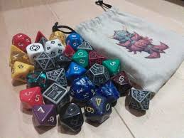

El anuncio del RPG oficial de la Justice League sigue siendo una de las noticias más comentadas del año en la comunidad TTRPG. La campaña aterriza en Gamefound en julio con DC Comics como licenciante, y aunque el sistema de juego y el estudio desarrollador todavía no se han confirmado oficialmente, las especulaciones apuntan a un juego diseñado específicamente para replicar el estilo de las historias de los cómics: misiones de equipo, poderes a escala planetaria y la tensión entre los distintos egos de los superhéroes más poderosos del universo DC. Es el tipo de licencia que puede romper records de financiación.
D&D se prepara para su presencia más ambiciosa en la historia de Gen Con 2026 con un edificio de seis plantas completo en Indianapolis, incluyendo torneos de D&D Live, sesiones de demo abiertas y el primer vistazo presencial a los productos de la Season of Magic. Arcana Unleashed, el gran libro de reglas de magia avanzada que abre la Season of Magic, llega en julio y la comunidad está especialmente expectante con las nuevas subclases arcanas y las opciones de personalización de hechizos.
La escena del rol de licencias lleva un año de vértigo: Daggerheart consolidado, Blade Runner RPG expandiéndose, 13 Omens de Paizo en preparación, y ahora Justice League sumándose a una lista de proyectos que hace cinco años habría parecido imposible. El modelo crowdfunding se ha convertido en el estándar para lanzar TTRPGs de licencia, con Gamefound como plataforma preferida después de que varios proyectos de Kickstarter de rol de alto perfil tuvieran problemas de entrega.
En el lado competitivo, los datos de ventas del mercado TTRPG del primer semestre de 2026 confirman que el sector sigue creciendo. Daggerheart ha canibalizando cuota de mercado a D&D entre los jugadores nuevos, pero el total del mercado ha crecido: hay más gente jugando a rol de mesa que en ningún otro momento de la historia. Gen Con 2026, que se celebra en agosto, promete ser el más grande de todos los tiempos con más de 70.000 asistentes esperados. El hobby está en un momento dorado.